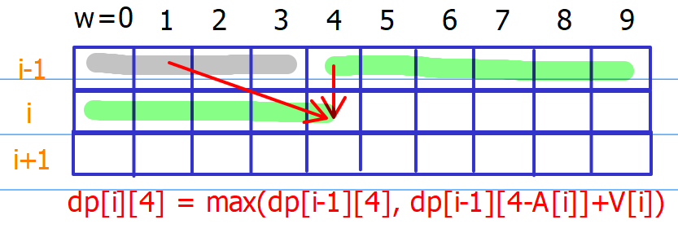
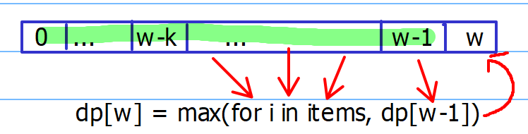

Knapsack Problems
The following discussion foucus on the series of knapsack problems.
Problem 1: Basic Version
Given n items with size Ai, an integer m denotes the size of a backpack, find the maximum size we can fit.
问题：n个物品不同的size，一个大小m的背包，求背包能装的最大size。
分析：
- 目标很明确，使用n个物品装大小为m背包的最大size
- 每个物品状态也很明确，每个物品可选，可不选
因此，直接定义dp[n]为使用前n个物品求出的最大size，再根据最后一步原理倒退分析dp[n]和dp[n-1]的联系。
1 | #condition 1: if nth item cannot be selected |
显然，我们发现，根据物品的状态无法直接显出有效的递归公式，因为我们少了一个背包当前的状态，于是我们补上当前背包状态，重新定于dp[n][m]
dp[n][m]表示使用前n个物品装大小为m背包求出最大的size，于是递推公式如下
1 | for j in range(m): |
一般来说，我们使用最后一步原理，
- 考虑如何最后一步实现目标。
对于上面这个题来说，实现最后一步的目标方式，一定是最后一个物品选，还是不选，所以，最后代码的实现，loop物品一定外循环，loop背包size一定是内循环。

Then, the code is shown
1 | def knapsack_I(A, m): |
- Notice背包大小范围在[0,m]建立内循环。我们使用二维dp节省空间。
Problem 2: General Version
Given n items and a backpack with size m. Given array A representing the size of each item and array V representing the value of each item. What’s the maximum value can you put into the backpack?
问题：n物品有大小和价值，使用m大小的背包装最多的价值。
题解同上。
This one is similar to the basic version.
1 | def knapsack_II(A, V, m): |
Problem 3: Unbounded Version
Given n items and a backpack with size m. Given array A representing the size of each item and array V representing the value of each item. What’s the maximum value can you put into the backpack? (Each item has infinite number available)
问题：n物品有大小和价值，使用m大小的背包装最多的价值。物品可重复使用。
分析：根据最后一步构成原理，nth物品，不选，选1次，选2次，。。。无数次。
如果还是使用之前的定义dp[i][j]为使用前ith物品装背包j的最大价值，寻找其和i-1物品的关系
1 | #condition 1: if nth item cannot be selected |
可以看出来，多了一个for loop循环选择次数，但是重写递推(使用largeNumber次和largeNumber+1次)
1 | 式1： dp[i][j] = max(dp[i-1][j-k*A[i]] + k*V[i] for k in range(largeNumber)) |
其对应的物理含义，dp[i][j-A[i]] 当前第ith物品被选中的时候，因此
1 | 前i物品装背包j最大价值 = max(第ith不选的背包j 第ith被选中了很多次的背包j-A[i] |

Thus, the code is shown as
1 | def knapsack_III(A, V, m): |
Problem 4: Combination Version
Given n items with size A[i] which an integer array and all positive numbers. An integer target denotes the size of a backpack. Find the number of possible fill the backpack. Each item may only be used once.
问题：n个物品各有大小，背包大小为target，求出装满当前背包在组合数量。每个物品用一次。
分析：根据最后一步原理，最后一个物品装包，还是不装包的组合数为状态可以定义当前dp[i][j]，使用前i个物品装满背包大小j的组合数。有以下递推公式
1 | dp[i][j] = dp[i-1][j] + dp[i][j-A[i]] |
As we consider the number of solutions in this problem, so the recurrence equation becomes
1 | dp[i][w] = dp[i-1][w] + dp[i-1][w-A[i]] # w >= A[i] |
where the defintion dp[i][w] represents that the number of ways obtained by using the first i items to achieve the given target w. Therefore, the code is shown as
1 | def knapsack_IV(A, target) |
- Notice that the initial condition for this problem is that
1 | dp[-1][0] = 1 # initial condition |
This means using no items to obtain the target 0 is exactly one possible way.
Problem 5: Unbounded Combination Version
Given an integer array A which contains n unique positive numbers, A[i] indicate the size of ith item. An integer target denotes the size of backpack. Find the number of ways to fill the backpack. Each item may be chosen unlimited number of times.
问题：n个物品各有大小，背包大小为target，求出装满当前背包在组合数量。每个物品用无数次。
分析：根据之前的问题3的分析，依然可以直接定义dp[i][j]为前i物品装满背包j的组合数量，递归公式如下：
1 | dp[i][j] = dp[i-1][j] + dp[i][j-A[i]] |
Thus, the code is shown as
1 | def knapsack_V(A, target): |
Problem 6: Unbounded Permutation Version
Given an integer array A with all positive numbers and no duplicates, find the number of permutations that add up to a positve integer target.
eg. A=[1, 2, 4], target = 4. The solution [1,2,1] and [2,1,1] are considered different.
问题：n个物品各有unique大小，背包大小为target，求出装满当前背包在排列数量。每个物品用无数次。
分析：根据最后一步构成原理，构成最后一步的permutation可以来自于数组中任何一个物品。因此只能定义dp[target]为目标，递归公式为：
1 | dp[t] = sum([dp[t-A[i]] for i in range(len(A)) if t>=A[i]]) |
这样就类似爬楼梯。

Thus, the code is shown as
1 | def knapsack_VI(A, target): |
Thoughts on the Knapsack Problem
Today, I did the target sum problem, where I learned two ways to solve the problem.
- Pull:
1 | dp[i][sum] = dp[i-1][sum - A[i]] + dp[i-1][sum + A[i]] |
- Push:
1 | dp[i][sum + A[i]] += dp[i][sum] |
It is interesting to use push to solve the problem. In addition, we can use the dictionary to lower the search space in the initial stages.
1 | for e in A: |
However, more interesting thing is that we don’t need to do the minus part by considering the following reduction. As it holds that
P - N = Target
P - N + P + N = Target + Sum(A)
P = (T + Sum) / 2
where P is a set of positive integers and N is the set of negative integers.
So the problem can be transformed to a subset sum problem to find a target sum at (T + Sum) / 2, by using this condition, we further pruning the search.
Partitioned DP
This partitioned DP 处理string和sequence， 且我们需要将stringparitition成k段substrings (subsequence) ，每段满足不同的条件.
Problem 1: Palindrome Partitioning
Given a string s, cut s into some substrings such that every substring is a palindrome. Return the minimum cuts needed for a palindrome partitioning of s.
Based on the last step principle, we can define dp[i] as the min-cut obtained by the string with the first i elements. Therefore, we could have the recurrence
1 | dp[i] = min(dp[i], dp[j] + 1 if isPalindrome(s[i:j+1])) |
This indicates that we need to store the result of that whether every string s[i:j+1] is a palindrome or not. Then, we need O(n^2) space.
To shrink the space complexity, a good technique is to apply push, then we can decide if a substring is a palindrome and store its results while updating the dp values. Thus, the push technique shows the recurrence as follows
1 | dp[i+r] = min(dp[i+r], dp[i-r-1] + 1) # |
where r represents the “radius” of the substring s[i-r, i+r].
Problem 2: Copy Books
Given n books and the i-th book has pages[i] pages. There are k persons to copy these books. These books list in a row and each person can claim a continous range of books. For example, one copier can copy the books from i-th to j-th continously, but he can not copy the 1st book, 2nd book and 4th book (without 3rd book). They start copying books at the same time and they all cost 1 minute to copy 1 page of a book. What’s the best strategy to assign books so that the slowest copier can finish at earliest time? Return the shortest time that the slowest copier spends.
问题：n本书不同的页数，k个人负责抄书，每个人只能连续的抄书，求k个人中最慢的那个抄书的会花的最短的时间
分析：根据min max(f[0], f[1], f[2],…,f[k-1])，根据最后一步原理，假设最后一个人抄书的范围设定在[j,n-1]本，设dp[i][j]为前i人且第i人抄到第j本的最短时间，可得如下递归式子
1 | for k in range(j): |
Given this partitioned one, we can use the previously similar last step principle.
1 | dp[k][i] = min(max(dp[k-1][j], sum(pages[j:i]) for j in range(i)) |
where dp[i] as the shortest time using by k workers with the first i books.
The abve recurrence equation also requires to deal with the summation in advance to lower the time complexity.
- Notice that sometimes based on the last step princeple, we might need to do additional computation to do the comparing, which probably could be done in advance and stored the results to lower the time complexity. (extra computation, comparing, do it ahead to store them).
Interval DP
区间问题应该是最难的DP问题，不同于传统的DP问题，使用最后一步构成原理， 通常无法实现polynomial time的求解，因此，当我们使用最后一步无法求解的时候，我们需要考虑区间DP的特性，这就意味着将问题切割成更小的问题切用2D的方式表示，例如dp[i][j]，表示问题在区间[i,j]的解.
To be specific, the last step principle uses dp[i] with 1D index, where i is the last step. However, the interval dp typically uses dp[i][j] with 2D index, where i is the first step and j is the last step. It is kind of like divide and conquer. (2D index, dp[start][end]).
Problem 1: Balloon Burst
Given n balloons, indexed from 0 to n-1. Each balloon is painted with a number on it represented by array nums. You are asked to burst all the balloons. If the you burst balloon i you will get nums[left] * nums[i] * nums[right] coins. Here left and right are adjacent indices of i. After the burst, the left and right then becomes adjacent.
Find the maximum coins you can collect by bursting the balloons wisely.
Note:
- You may imagine
nums[-1] = nums[n] = 1. They are not real therefore you can not burst them.
分析：扎气球实际上permutation的问题，因此，最后一步构成原理可以由每个气球构成(n个中)。因此，定义dp[0][n-1]为使用第0-n-1个气球的cost，那么可得
1 | dp[0][n-1] = max(dp[0][i]+nums[0]*nums[i]*nums[n-1]+dp[i][n-1] for i in range(1, n-2)) |
由此，我们将问题切割为更小的区别子问题，代码如下：
1 | def ballonn(A): |
注意：消去型的题目，逆向考虑最后一步，答案如何得到。
Game Theory DP
The geme theory dp problem deals with two playes with the optimal policy. So, we generally need to consider the two players together and solve the recurrence in a reversed manner.
博弈DP的特点是两个选手always采用最优策略。
Problem 1: Coins in a line
问题：有一排N个石子，Alice, Bob两人轮流取石子。每次一个人可以从最右边取走1个或2个石子。取走最后石子的人胜。 问先手Alice是否必胜 (先手必胜: true,先手必败: false)
分析：博弈问题并不适合最后一步分析，因为是面临一个setting，所以一般来说，使用第一步分析，而我们要确认的是dp[0]的值，表示当前还剩下多少n个没有取走。有点逆向的感觉，那么可以显然看出，dp[n-1]和dp[n-2]一定是True。
博弈的递归关系可以对之前的状态取反写出来(最好举例确认逻辑关系)
1 | dp[i] |= not(dp[i+1] and dp[i+2]) |
因此代码如下：
1 | def coin(n): |
Problem 2: Coins in a line II
问题：There are n coins with different value in a line. Two players take turns to take one or two coins from left side until there are no more coins left. The player who take the coins with the most value wins.
分析：利用下一题的原理可以求解，
Problem 3: Coins in a line III
题意：给定一个序列a[0], a[1], …, a[N-1]，两个玩家Alice和Bob轮流取数，每个人每次只能取第一个数或最后一个数， 双方都用最优策略，使得自己的数字和尽量比对手大，问先手是否必胜。如果数字和一样，也算先手胜。
分析：利用第一步分析，且因为是博弈关系，我们考虑dp[0:n-1]不是算当前选手最大值，而是当前选手比对手多的值。递归关系有
1 | dp[0,n-1] = max(A[0]-dp[1，n-1], A[n-1]-dp[0，n-2]) #Alice比bob多的值 |
这样代码如下：
1 | def conins(a): |
例子分析：
1 | 输入： [1, 5, 233, 7] |
Double Sequence DP
双序列DP问题一般的目标是基于两个串的特性的。例如，考虑一个问题P，有两个串A和B目标是(最大公共字串，将A变成B)。因此，根据最后一步原理，一般我们定义dp[i][j]表示目标去求解问题。
为了找到递推方程，一般利用pull的方法。首先，最重要的一点，假设前i个A和前j个B的子问题的目标已经实现，例如dp[i][j]对应的min/max值求出来了，也就是说对应的dp[i][j]的目标配置被完全实现。例如，最长公共子串问题，dp[i][j]不仅代表这个最长的值，也代表着A串已经完全转化到B了。基于这个目标，我们就需要反向推理如何获得dp[i][j]，有哪些可能的最后一步实现这个目标和配置。一般来说，相关的变量是dp[i-1][j]，dp[i][j-1]，dp[i-1][j-1]。
另一个很重要的点是，即使我们考虑了dp[i][j]的目标配置，当处理实际的 问题，例如(处理，原始A[0:i] and B[0:j] 需要改变配置到A’[0:x], B’[0:y]基于目标，但是我们的递推方程在建立的时候，还是需要考虑原始的string和index，以及其处理的orignial strings and index (A[i-1], B[j-1]), (A[i], B[j-1]), (A[i],B[j-1]) rather than those settings ((A’[0:x-1], B’[0:y-1]), A’[0:x], B’[0:y-1]).
Problem 1: Distinct Subsequences
题意：给定两个字符串A[0..m-1]，B[0..n-1]，问B在A中出现多少次（可以不连续）
1 | 例子 |
分析：之所以分析不出来，
- 问题1：求多少种的时候，是＋，最后一步分类，再讨论分类用加号链接
Problem 2: Edit Distance
Given two words A and B, find the minimum number of steps required to convert A to B. (each operation is counted as 1 step.) You have the following 3 operations permitted on a word:
- Insert a character
- Delete a character
- Replace a character
问题：编辑距离：
Since the covertion requires the permutation, we can define that dp[i][j] is the min step that we convert A[i] to B[j]. Based on the discussion above, by reasoning backward, the possible step to achieve the conversion is to either insert at pos i, delete the pos i, or replace the pos i. Hence, the recurrence equation is derivated as
1 | dp[i][j] = min(dp[i][j-1] + 1, \ # insert after pos i |
where the above cases are discussed:
- Case 1: inserting at pos i indicates in the problem dp[i][j] the new element insert after A[i] matches B[j], so that 1st recurrence holds.
- Case 2: deleting at pos i indicates in the problem dp[i][j] A[i] is extra element and takes the extra step, so 2nd case holds
- Case 3: replacing, easily understood
- Case 4: no operation, easily understood.
Problem 3: Longest Increasing Common Subsequence
Given 2 sequences of integers, we need to find a longest sub-sequence which is common to both the sequences, and the numbers of such a sub-sequence are in strictly increasing order.
Let dp[i][j] be the LICS of A[0:i] and B[0:j]. Based on the last step principle, consider the following cases:
- Case 1: B[j-1] is not in LICS, dp[i][j] = dp[i][j-1]
- Case 2: A[i-1] is not in the LICS, dp[i][j] = dp[i-1][j]
- Case 3: A[i-1] and B[j-1] are both in LICS, dp[i][j] = dp[i-1][j-1] + 1, where A[i-1] = B[j-1] and A[i-1] is larger than the last value in the setting of dp[i-1][j-1]. (missing some cases…)
Notice that the difficulty in Case 3 is that we need to know the last value in the previous setting dp[i-1][j-1], which is in fact unknown. To solve the problem, I use the following technique 1.
technique 1:
If the information is unknown, compute it by introducing dp[i][j][1].
Based on the technique, we extend the defintion dp[i][j] to target both the maximal length LICS and the samllest ending number in the LICS.
- dp[i][j][0]: maximal length of LICS
- dp[i][j][1]: smallest ending number of this LICS
Thus, we go back to previos discussion.
- Case 1: dp[i][j][0] = dp[i][j-1][0], dp[i][j][1] = dp[i][j-1][1]
- Case 2: dp[i][j][0] = dp[i-1][j][0], dp[i][j][1] = dp[i-1][j][1]
- Case 3: dp[i][j][0] = dp[i-1][j-1][0] + 1 if A[i-1] = B[j-1] and A[i-1] > dp[i-1][j-1][1], dp[i][j][1] = A[i-1]
However, something is overlooked in Case 3. For A[i-1] = B[j-1], we need to update the dp[i][j] by comparing all the previously dp[i-1][0]…dp[i-1][j-1] to find the LICS, so we modify Case 3 to:
- Case 3: dp[i][j][0] = max(dp[i][j][0], dp[i-1][k][0] + 1) if A[i-1] = B[j-1] and A[i-1] > dp[i-1][k][1], for k in range(j-1).
1 | def LICS(A, B): |
Based on the above logic, it is a O(n^3) time algorithm. In addtion, the logic is a little complicated due to we introduce the last value in the LICS. Thus, In the following we use the 2nd technique to solve it.
technique 2:
If the information is unknown, associating it with the index in dp[i][j].
Based on this technique, it is obvious that we need to associate the last value of LICS of the index of dp[i][j]. Therefore, we redefine dp[i][j] to be the LICS of A[0:i] and B[0:j] where B[j-1] is the last value in this LICS. Therefore, the following recurrence can be derived easily.
- Case 1: dp[i][j] = max(dp[i][j], dp[i-1][j] if A[i-1] != B[j-1])
- Case 2: dp[i][j] = max(dp[i][j], dp[i-1][k] if A[i-1] == B[j-1] and B[j-1] > B[k] for k in range(j))
With the above recurrence equation, we are able to clearly solve the problem in O(n^3) time. However, there are some space for us to improve it. That is, since A[i-1] = B[j-1] and B[j-1] is the largest value, we need to find maximal of all the dp[i-1][k] with B[k] smaller than A[j-1],
1 | def LICS(A, B): |
Therefore, the above algorithm is O(n^2) time with O(n) space.
Hard Problems
This sections presents some hard problems and discusses the important thoughts on solviing them.
Problem 1: K sum
题意：给定数组A，包含n个互不相等的正整数, 问有多少种方式从中找出K个数，使得它们的和是Target
分析：目标构成target，且是组合问题，根据最后一步构成原理，
到底是dp[i][k][target]，还是dp[i][target][k]，
1 | dp[i][k][target] = dp[i-1][k][target] + dp[i-1][k-1][target-A[i]] |
代码是这样的
1 | def kSum(A, k, target): |
例子：
1 | 输入：A=[1, 2, 3, 4], K=2, Target = 5 |
如果是定义dp[i][target][k]，使用上面相同的代码依然正确(交换target和k的维度)。
但是这个解的时间复杂度太高了。其实在是否选择当前第ith number的时候，我们可以记录选择了的个数。因此考虑这个信息。可以使用push的方式编写递推关系，这样有更好的效率。
1 | #依然使用dp[i][t]的定义 |
Problem 2: Minimum Adjustment Cost
To solve this problem, we start with the last step principle. We thus define dp[i] as the min-cost of adjustment for first i integers. Based on this defintion, we assume that A[i] is changed to B[i], where it holds that |B[i]- B[i-1]| < target.
So, there are two important questions to answer.
- B[i-1] is unknow
- Even it is known, how can we guarantee it is optimal to modify A[i] to B[i] within [B[i-1] - target, B[i-1] + target].
Moreover, it is just a greedy way to caluate the cost .
Thus, we utilize the technique 3,
technique 3:
If the information is unknown, adding one dimension to have dp[i][k].
So, due to this technique, we redefine the state dp[i][k], where k represents the value B[i]. Since k is bounded in [0, 100]. This yields the following recurrence equation.
1 | d[i][j] = min(d[i-1][k] + abs(j-A[i]) for k in range(0, 101) if j- Target <= k and k <= j + target) |
to be continued…
Problem 3: K Edit Distance
Given Edit distance problem (modify, insert, delete), and K is max-cost, output the possible strings.
eg:
A = [“abc”, “abd”, “abcd”, “adc”], Target = “ac”, K = 1
Output： [“abc”, “adc”]
In fact, it is easy to see that this problem combines Trie and Edit distance. We use the standard dp to solve the edit distance problem.
1 | def DP(string, target) |
To employ the Trie structure, we store all the input strings in Trie and change the outer loop to a DFS traversal procedure, which is shown as follows
1 | def k_edit_distance(A, target, k): |